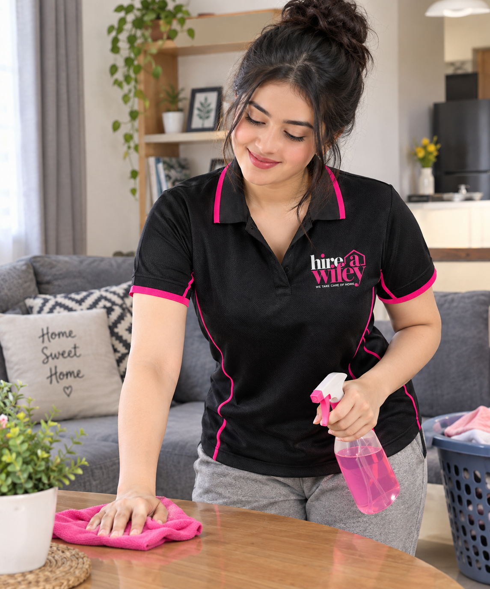
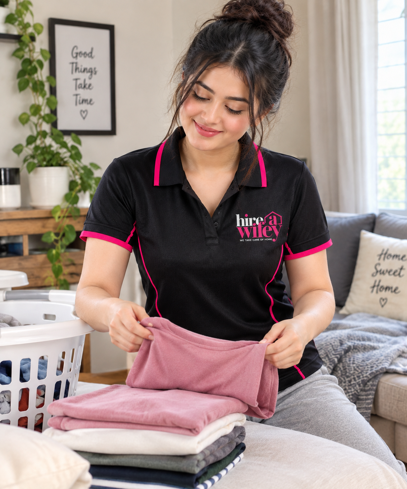
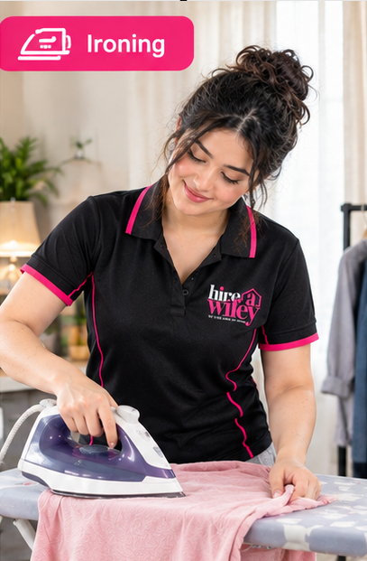
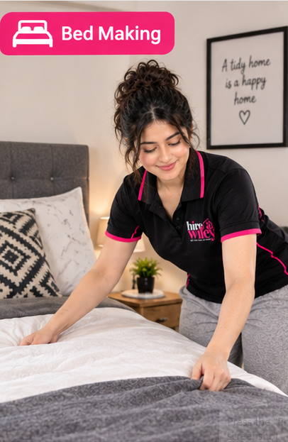
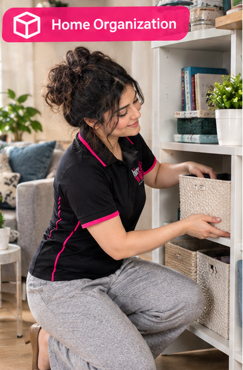

Cleaning
A fresh, beautifully cared-for home.

Hervey Bay home help
Reclaim your free time — we handle cleaning, laundry & more.
How we help
Practical help for a home that feels lighter, calmer and cared for.

A fresh, beautifully cared-for home.
Washed, folded and off your list.

Crisp clothes without the chore.

Hotel-fresh comfort at home.

Calm, practical spaces that work.
A helping hand around the kitchen.
Inclusive support
We proudly support NDIS and DVA clients with respectful, dependable help at home.
NDIS support
DVA clients
Right around the corner
Serving all of Hervey Bay and surrounds.
Kind words
“I came home to everything beautifully done. Friendly, thoughtful and such a relief.”
“Reliable, warm and wonderfully thorough. I finally have my weekends back.”
Good to know
Join the team
Bring your care, energy and eye for detail.
Let’s chat
Tell us what would make home life easier.